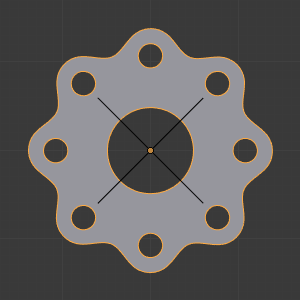

阵列修改器–gkuggkug豆豆翻译¶
The Array modifier creates an array of copies of the base object, with each copy being offset from the previous one in any of a number of possible ways. Vertices in adjacent copies can be merged if they are nearby, allowing smooth Subdivision Surface frameworks to be generated.
这种修改器可以用于大场景的平铺网络快速制作，对于制作复杂的重复模型是非常有用的。
允许同时拥有多个阵列修改器（例如，在创建复杂的三维结构时）。
选项¶
阵列修改器
- 适配类型
Controls how the length of the array is determined. There are three choices, activating respectively the display of the Curve, Length or Count settings explained below:
- 适配曲线
在适配的曲线路径指定的长度范围内生成指定数量的副本
- 适配长度
在固定blender单位的长度范围内生成指定数量的副本
- 固定数量
生成指定数量的副本
- 曲线
用于适配曲线的曲线
- 长度
用于适配长度的长度
- 数量
用于固定数量的重复次数
注解
- Both Fit Curve and Fit Length use the local coordinate system size of the base object, which means that scaling the base object in Object Mode will not change the number of copies generated by the Array modifier.
- Fit Length uses the local coordinate system length of the curve, which means that scaling the curve in Object Mode will not change the number of copies generated by the Array modifier.
ctrl+A可以将缩放应用到物体上
- 恒定偏移，X，Y，Z
在新增加的物体之间添加一个X，Y，Z方向的固定偏移量
- 相对偏移，X，Y，Z

Relative offset (0.5, 1.0 and 1.5) examples.
新增加的物体之间沿X，Y，Z方向偏移该物体包围盒大小乘以比例因子的距离偏移。
- 物体偏移

物体偏移的实例
使用物体的坐标数据来控制阵列的偏移量。一般经常使用空物体作为中心，通过旋转来生成圆圈或者螺旋的阵列。
- 合并
如果启用的话，在指定的距离范围内，每个副本中的顶点会和下一个副本中的顶点合并。
- 始末
如果 与 合并 一起启用，第一个副本将和最后一个副本的顶点合并，这个在圆形阵列物体上是非常有用的功能。
始末与合并的示例¶ 
Subdivision discontinuity caused by not merging vertices between first and last copies (First Last off).
Subdivision discontinuity eliminated by merging vertices between first and last copies (First Last on).
- 距离
指定合并的距离阀值
- Start Cap / End Cap
This allows either endpoints of the array to have a different mesh subsisted.
For the start: as if it was in position -1, i.e. one “array step” before the first “regular” array copy. For the end: as if it was in position n + 1, i.e. one “array step” after the last “regular” array copy.
When Merge is activated, and the cap vertices are within the distance threshold, they will be merged.
注解
The start/end cap objects currently do not support the First Last option.
提示¶
偏移计算¶
The transformation applied from one copy to the next is calculated as the sum of the three different components (Relative, Constant and Object), all of which can be enabled/disabled independently of the others. This allows, for example, a relative offset of (1.0, 0.0, 0.0) and a constant offset of (0.1, 0.0, 0.0), giving an array of objects neatly spaced along the X axis with a constant 0.1 units between them, whatever the original object’s size.
示例¶
机械¶
A track. Sample blend-file. |
|
A cog created from a single segment. Blend. |
A crankshaft. Sample blend-file. |
A chain created from a single link. Sample blend-file. |
{kind=link}
{kind=link}
{kind=link}
{kind=link}
{kind=link}
分形¶

多层次的动画与运动模糊 |
Fractal created with multiple arrays. Blend. |

A fractal fern image created with two array modifiers and one mirror applied to a cube. |
{kind=link}
有机¶
A double spiral created with two array modifiers and one Subdivision Surface modifier applied to a cube. As above, the vertex merge threshold is set very high to give the effect of skinning. Sample blend-file. |
{kind=link}
{kind=link}

A tentacle created with an Array modifier followed by a Curve modifier. The segment in the foreground is the base mesh for the tentacle; the tentacle is capped by two specially-modeled objects deformed by the same Curve object as the main part of the tentacle. Sample blend-file.
教程¶
“双螺旋”教程解释了阵列修改器。在这里使用的是旧的blender版本（2.44），但除了快捷键，它在新版本中依然也能正常使用。